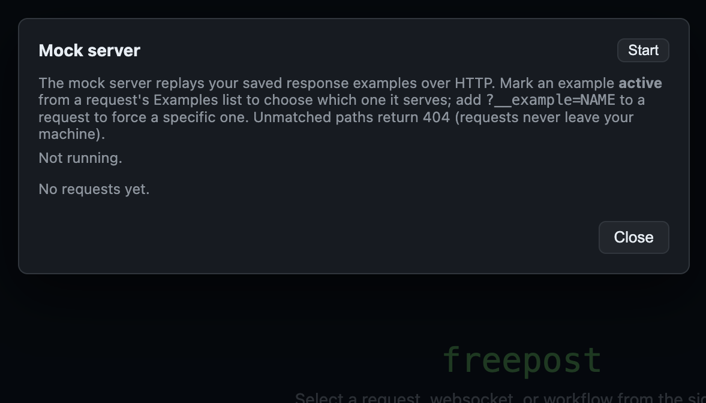
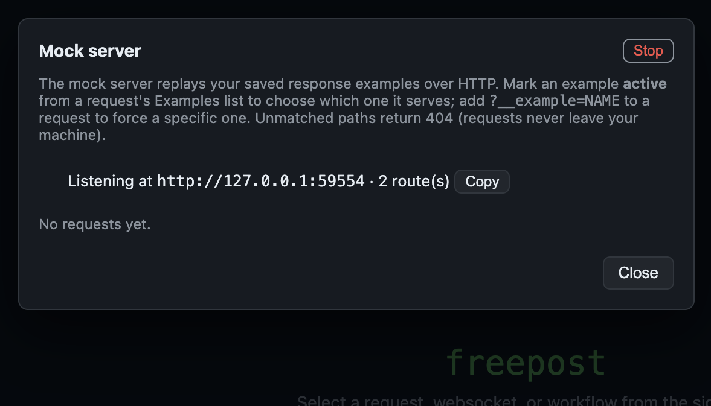
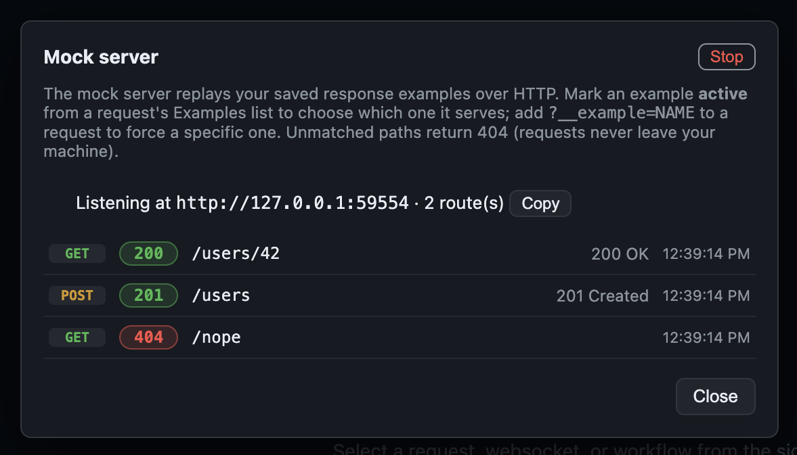

Mock server
The mock server turns a collection's saved response examples into a live local HTTP server. Point your app at it to develop against canned responses — offline, with no real backend, and no data ever leaving your machine.
How routes are built
Every .curl request that has at least one
saved example becomes a route. The method and URL path come
from the request; a ${VAR} in a path segment (e.g.
/users/${id}) becomes a wildcard that matches any value there. Literal routes
win over wildcard ones at the same shape, so /users/me is served before
/users/${id}. The host and query string are ignored for matching.
Choosing which example to serve
A request can have several examples (a 200, a 404, …). The mock picks one, in this order:
- An explicit override on the incoming request — the
?__example=NAMEquery parameter, or theX-Freepost-Mock-Example: NAMEheader. Handy for demoing an error path in a test without touching files. - The active example — open a request's Examples list and select the Mock radio next to one. At most one example per request is active.
- Otherwise the first example in the file, in saved order.
Starting it
In the app, click Mock Server in the top bar to open the panel, then Start:

Freepost binds a local port and shows the base URL with a copy button:

Every request the mock handles streams into a live log below the banner — method, matched status, path, and timestamp:

From a terminal (great for CI or scripting):
freepost mock ./my-collection --port 8080
It serves until you press Ctrl-C. See the command-line guide for
details. Omit --port to let the OS pick a free one.